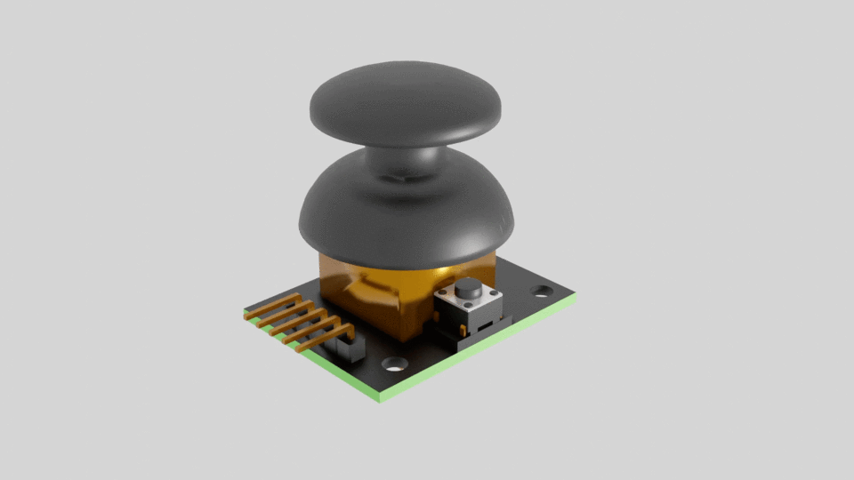
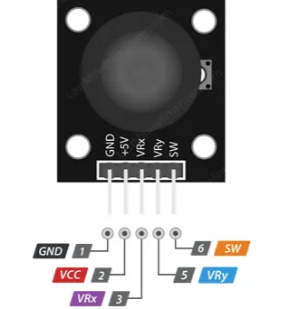
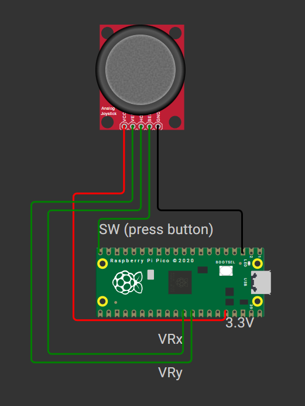
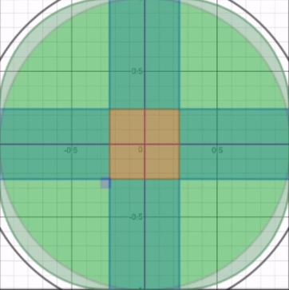

What You Need
Learning Goals
- Understand how the HW-504 joystick works
- Read analog values via Pico’s ADC input
- Convert analog input into servo angles
- Handle joystick press-button as digital input
- Apply dead zone filtering to reduce input noise
- Control servo smoothly and in real time
Step-by-Step Guide
🎮 Step 1: How the Joystick Works
- Two potentiometers for X and Y axes (VRx and VRy)
- One push-button switch (SW pin)
The joystick produces analog voltage when moved. Center position gives ~1.65V (for 3.3V system). Moving left/right changes the VRx voltage (connected to X-axis). Pressing the joystick activates the switch (pulls SW pin LOW). This makes it an intuitive tool for manual robot control.

🔌 Step 2: Wiring the Joystick
| Joystick Pin | Raspberry Pi Pico |
|---|---|
| VCC | 3.3V |
| GND | GND |
| VRx | GP26 (ADC0) |
| SW | GP15 (digital IN) |
| VRy | (not used yet) |


🧪 Step 3: Read Analog & Digital Inputs
How ADC Works: The Pico’s ADC (Analog-to-Digital Converter) reads analog voltages (0–3.3V) and converts them into a digital value between 0 and 65535 (16-bit resolution). This allows the microcontroller to sense varying voltages from sensors like the joystick and process them in code.
from machine import ADC, Pin
from time import sleep
x_axis = ADC(26) # X-axis analog input
button = Pin(15, Pin.IN, Pin.PULL_UP) # Button input (now on GP15)
while True:
x_val = x_axis.read_u16()
print(f"X: {x_val}")
if button.value() == 0:
print("Joystick pressed!")
sleep(0.2)
🎯 Step 4: Map Joystick Value to Servo Angle
How the Code Works: The joystick’s analog value (x_val) ranges from 0 (far left) to 65535 (far right). To control the servo, we need an angle between 0° and 180°. The formula angle = int(x_val * 180 / 65535) linearly maps the joystick’s full range to the servo’s full sweep. When the joystick is centered, the angle will be around 90°; moving it left or right changes the angle proportionally.
angle = int(x_val * 180 / 65535)No external mapping function needed.
⚙️ Step 5: Set Up Base Servo
This step assumes you are using the Pico Pedro 4-DOF Robot Arm as introduced in Module 7. There, you’ll find detailed instructions on assembling and wiring the robot arm, including the base servo connection. If you need a refresher on the build or wiring, jump back to Module 7 before continuing!
from machine import PWM
base_servo = PWM(Pin(2))
base_servo.freq(50)
def angle_to_duty(angle):
min_us = 500
max_us = 2500
us = min_us + (max_us - min_us) * angle // 180
return int(us * 65535 / 20000)
def move_base(angle):
base_servo.duty_u16(angle_to_duty(angle))
🚫 Step 6: Understand the Dead Zone
A dead zone is a threshold zone around the joystick center. Small unintentional wobbles can cause servo jitter — the dead zone filters this out.

In the graph above, the shaded region in the center represents the dead zone. When the joystick’s analog value (X) is within this range, the servo does not move—this prevents jitter from small, accidental movements. Only when the joystick is pushed far enough left or right (outside the dead zone) does the servo respond, making control smoother and more intentional.
dead_zone = 2000
center = 32767
if abs(x_val - center) > dead_zone:
# Considered valid movement
This improves stability and user experience.
🔄 Step 7: Real-Time Base Rotation with Dead Zone
About Real-Time Programming: In this context, real-time means the robot responds instantly to joystick movements, updating the servo position as soon as the input changes. The while True loop continuously reads the joystick and updates the servo, so there’s no noticeable delay between your hand movement and the robot’s action. This is essential for smooth, intuitive manual control—if the code only checked the joystick occasionally, the robot would feel laggy or unresponsive.
🧩 Step 8: Mini Challenge – Smooth Base Motion
Smoothly transition the base from current to new angle:
def sweep_to_angle(current, target):
step = 1 if current < target else -1
for a in range(current, target + step, step):
move_base(a)
sleep(0.01)
return target
# Usage example
base_angle = sweep_to_angle(base_angle, angle)
📺 Complete Tutorial Video
Quick Recap
- ✅ Understand the HW-504 analog joystick's hardware
- ✅ Use Raspberry Pi Pico to read analog and digital signals
- ✅ Map analog input to servo angle with basic math
- ✅ Apply a dead zone to avoid jitter
- ✅ Use the joystick press button as an action trigger
- ✅ Control servo smoothly and in real time
🎯 What’s Next?
Try expanding your joystick control to more axes, or add more features like speed control or button actions!